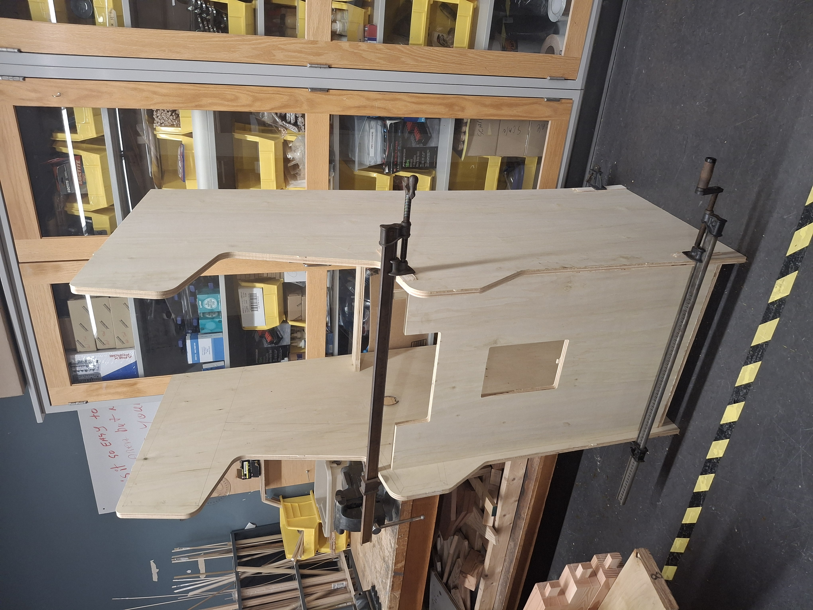
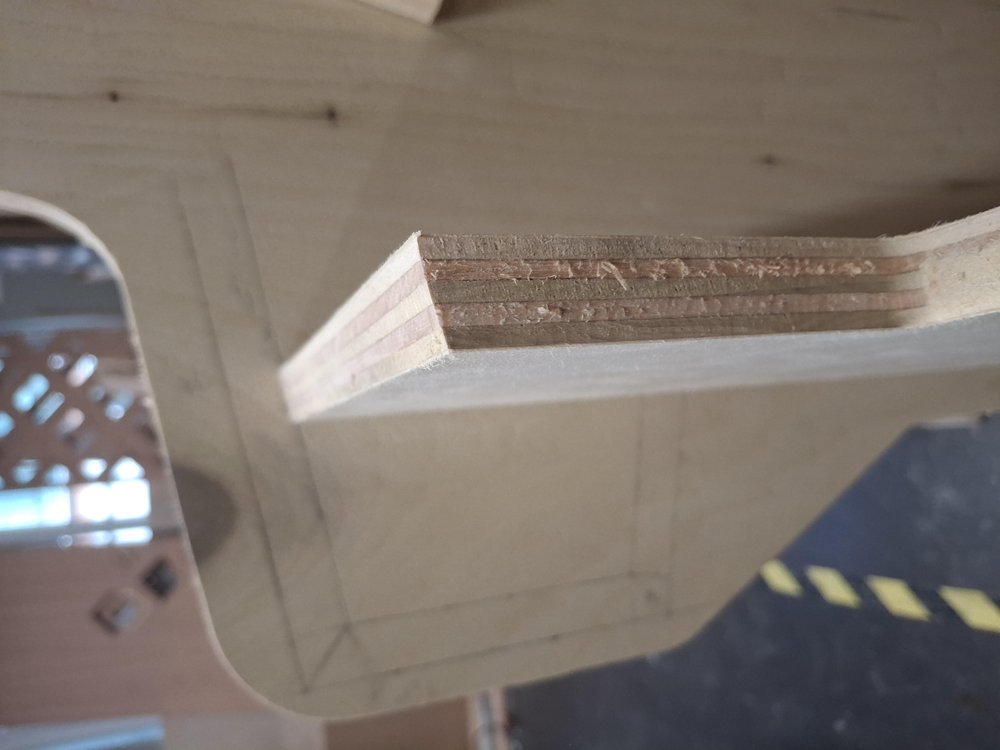
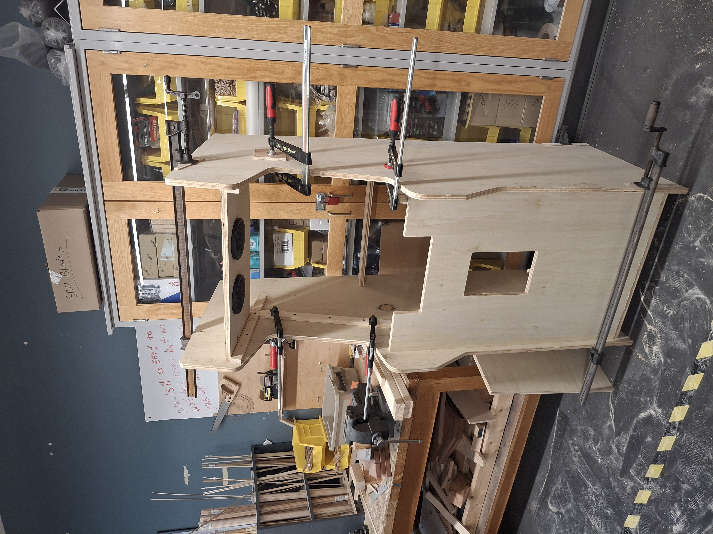
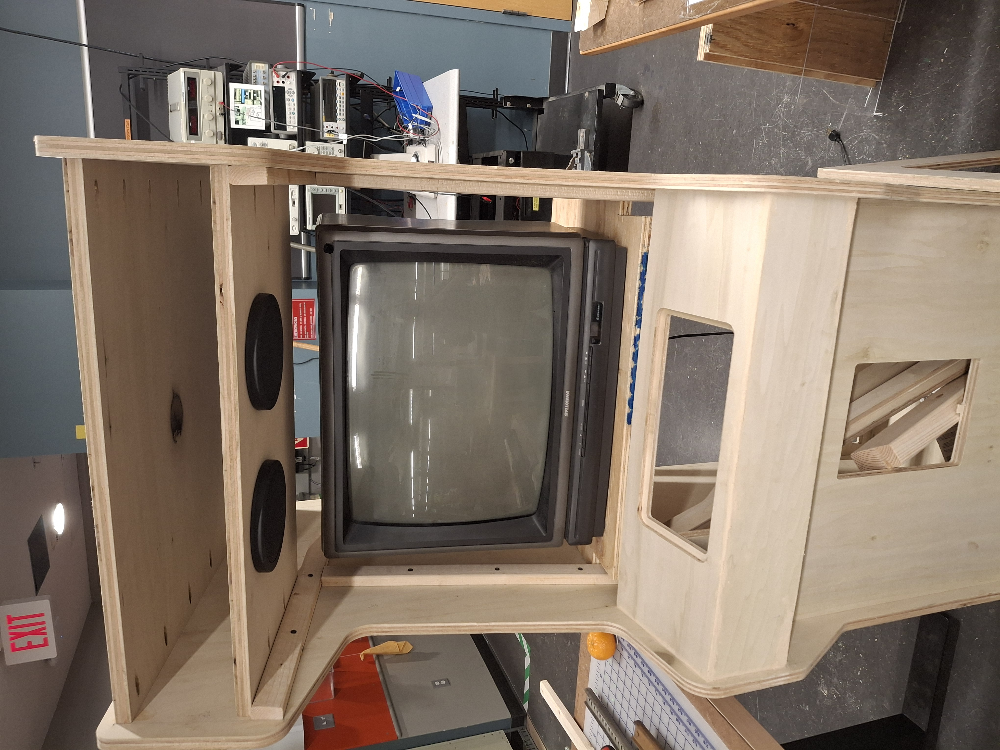
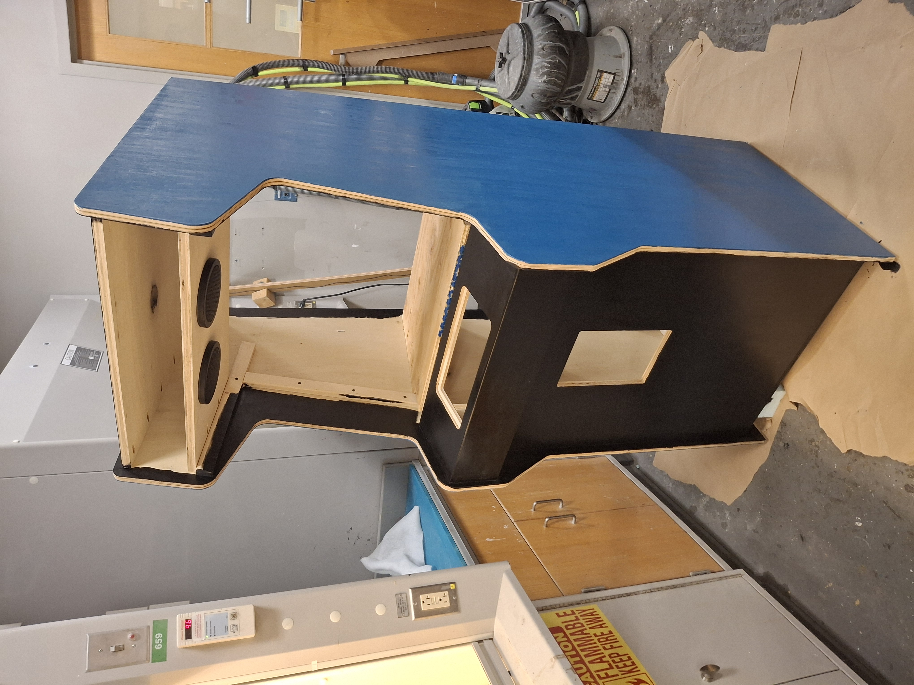
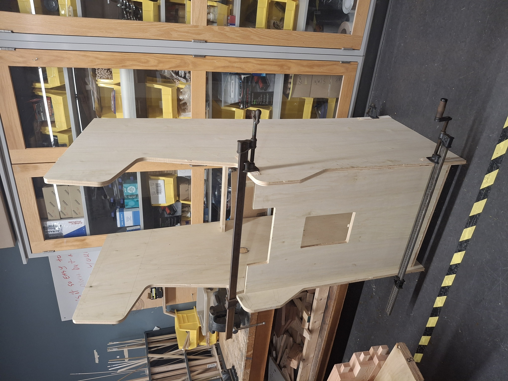
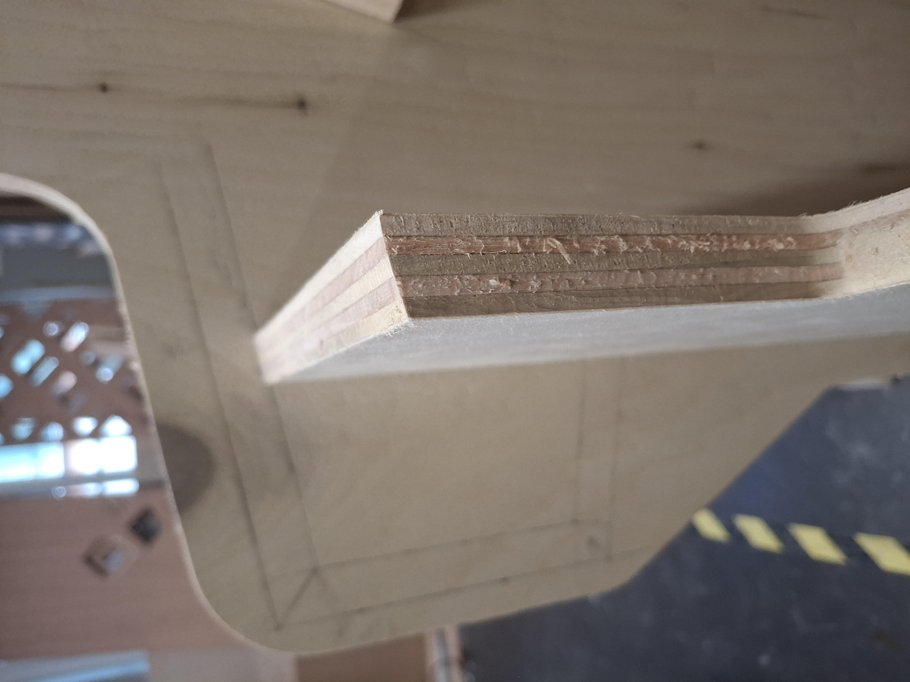
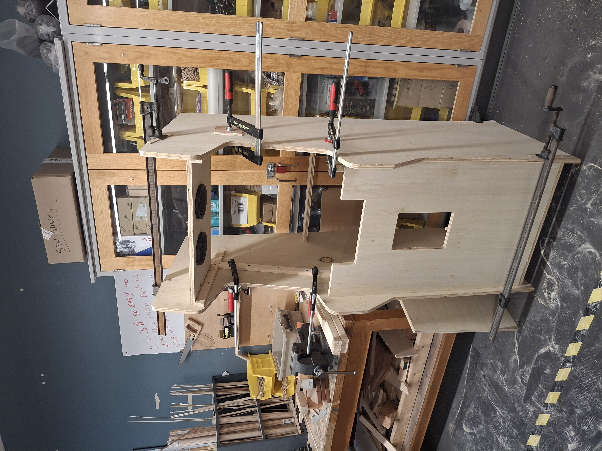
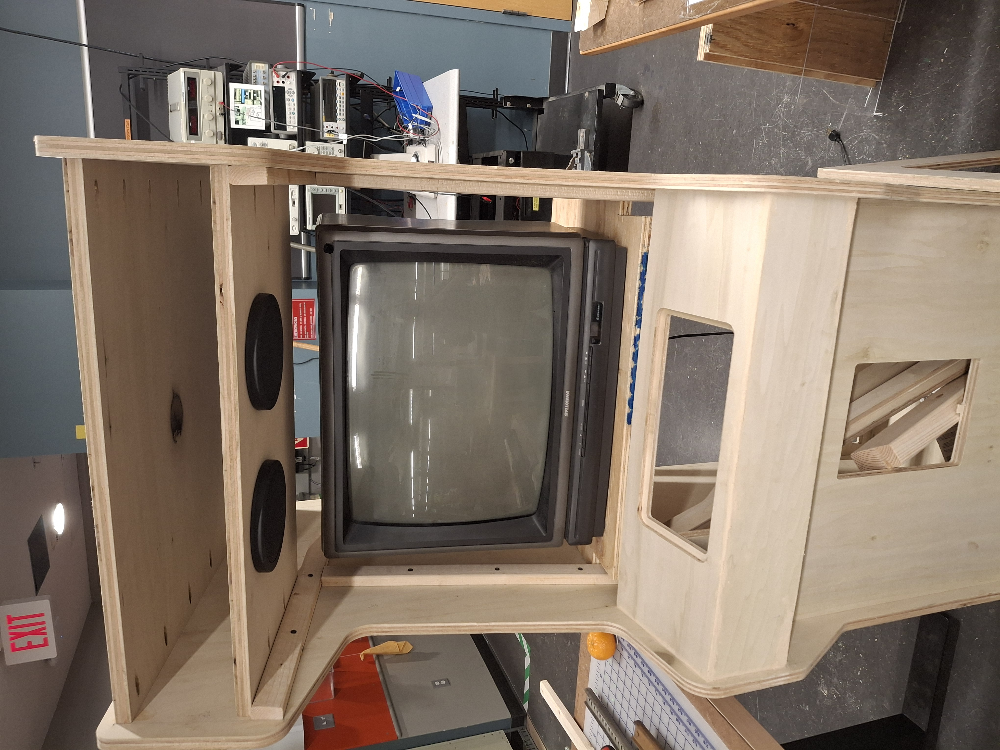
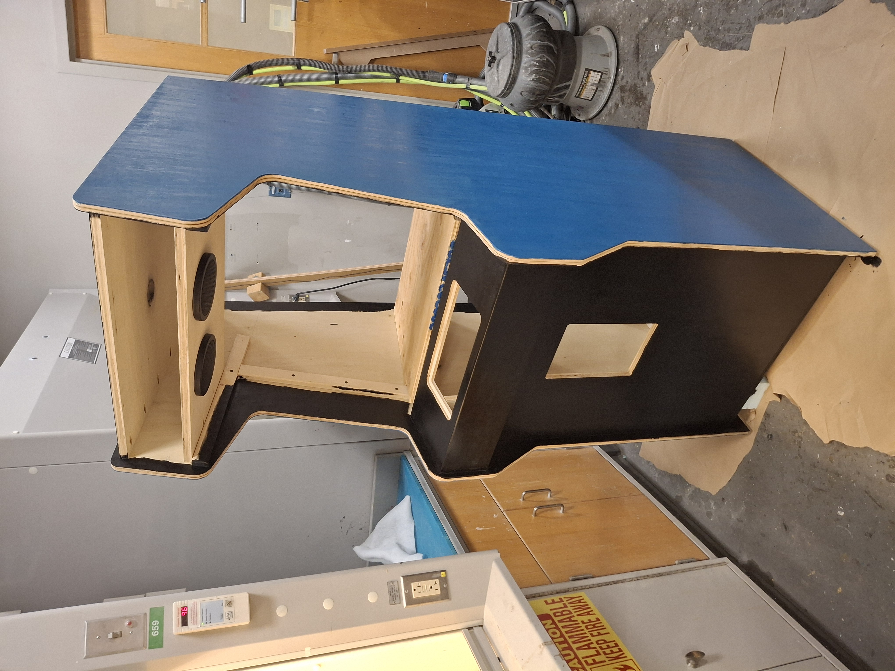

Justin Sapun,
justin.sapun.th@dartmouth.edu
Building a custom arcade cabinet blends retro gaming with hands-on craftsmanship. This project uses a Raspberry Pi and modern components to recreate the classic arcade experience from scratch, complete with an old retro CRT monitor, joystick controls, speakers, and a real coin slot.
Hardware Components
-
Raspberry Pi 4B, CRT monitor, video cables (composite, coax, RF modulator), speaker kit (amp, speakers, wires)
-
Joystick, buttons, encoder board, coin slot, light bar
-
Power entry module, power cable, power strip
-
Cabinet-grade 8'x4' plywood, 2x4s, 1x2s, inset hinges, pocket hole jig, key & lock, magnet
-
Black & blue paint, wood filler, black fabric (speaker cover), T-molding (¾"), T-slot router bit (1/16", ⅜" depth)
-
Roller trays, 4" & 6" foam rollers, 6" roller assembly, foam brush
Introduction
As part of my work with DALI Lab, I helped build a custom arcade cabinet for Benchmark Space Systems and BRIC. These companies partnered with us to create Satellite Game, an educational retro style arcade game that teaches players about orbital debris and satellite propulsion systems. The arcade cabinet was designed to house the game and will be featured at the Serious Play Conference. I was responsible for building and wiring the physical system that would bring this immersive STEM outreach tool to life.
Implementation
The arcade cabinet was designed, built, and painted from scratch to showcase our Satellite Game. The gallery below highlights key moments in the build process from raw plywood to fully assembled and painted hardware.
 









The game ran on a Raspberry Pi 4, connected to a CRT monitor through a series of signal converters to handle analog video output. Getting the display to work properly required manually configuring the Pi's video settings to support composite output, as well as adjusting resolution and overscan to match the CRT's format. The Godot 4 game files needed to be exported specifically for Linux ARM and optimized to run smoothly on the Pi's limited hardware. Input from the joystick and buttons was routed through a USB encoder board, which allowed the Pi to recognize them as standard keyboard events. The entire hardware pipeline, from display signal handling to input mapping, had to be carefully tuned to work reliably inside the cabinet.
Skills
Built a full arcade cabinet from scratch, including wood cutting, framing, T-molding, and laminate finishing. Installed and wired arcade controls using a joystick, buttons, and USB encoder. Designed 3D-printed mounts for internal components, managed power routing, and integrated a CRT monitor with composite signal conversion. Configured Raspberry Pi OS, used SSH and the terminal for deployment, and exported a Godot 4 game for ARM hardware optimized for limited performance.